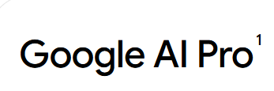
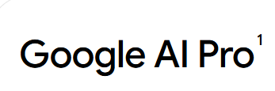

2023년 5월 10일- 구글 I/O 2023에서 Gemini 1.0 모델이 처음 공개되었다 2023년 9월- 일부 기업을 상대로 테스트가 시작되었다. 2023년 12월 6일- 울트라, 프로, 나노로 구성된 세 가지 제미나이 모델을 전격 공개했다. 2023년 12월 13일- Google AI Studio나 Google Cloud Vertex AI를 통해 다른 애플리케이션에서 모델 구동이 가능해졌다. 2024년 1월 18일- 공개된 갤럭시 S24 시리즈에 일부 기능이 탑재되었다. 나노형 모델이 온디바이스로 내장되었다. 2024년 2월 15일- Gemini 1.5가 공개되었다 2025년 2월 5일- Gemini 2.0이 공개되었다 2025년 3월 26일- Gemini 2.5이 공개되었다
빠른 답변 속도 : 3가지의 답안을 제공하고, 각각 답안이 순서대로 특성이 다르다고 한다. 첫 번째는 정보 기반, 두번째는 분석 및 통찰, 세번째는 창의적인 답변을 기반으로 하듯이 한 가지의 질문을 하면 빠른 속도로 3개의 유형의 답변을 받을 수 있다.
어문학적 능력 : 다른 AI들과 비교할 시 영어는 물론 영어가 아닌 다국어 표현 능력이 굉장히 우수하다는 평을 받고 있다. 번역 성능도 매우 뛰어나다.
부정
떨어지는 융통성 : 질문에 정확한 답을 하지 못하거나 논란이 되는 주제에 대해 답을 회피한다는 지적이 나왔다.
현실 관련 이슈 회피 : 뉴스 요약에도 약점이 있었다. 잠재적으로 논란이 될 수 있는 뉴스 주제에 대한 의견을 피하고 대신 사용자들에게 직접 구글에서 찾아보라고 말하기도 했다.

 
